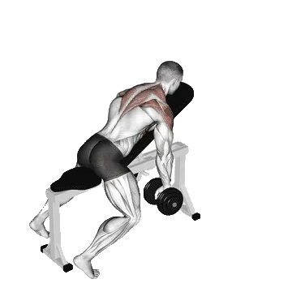

Dumbbell Incline Y Raise
Dumbbell Incline Y Raise shows average weight and strength standards as a reference for back. Primary muscles: Deltoids, Trapezius.

Average weight: Intermediate
Reference for an intermediate lifter.
Men
23 kg
Women
12 kg
Dumbbell Incline Y Raise: Average weight [1RM]
| Level | ||
|---|---|---|
| Beginner | 3 kg | 2 kg |
| Novice | 10 kg | 6 kg |
| Intermediate | 23 kg | 12 kg |
| Advanced | 40 kg | 20 kg |
| Elite | 61 kg | 29 kg |
Note: These standards are 1RM estimates based on average lifters. Bodyweight, age, and other personal factors can affect the values. See the detailed tables below.
Dumbbell Incline Y Raise: Strength standards (kg)
Men by bodyweight (kg) [1RM]
| Bodyweight | Beginner | Novice | Intermediate | Advanced | Elite |
|---|---|---|---|---|---|
| 50 | 1 | 5 | 14 | 27 | 44 |
| 55 | 1 | 6 | 15 | 30 | 47 |
| 60 | 1 | 7 | 17 | 32 | 50 |
| 65 | 2 | 8 | 19 | 34 | 53 |
| 70 | 2 | 9 | 20 | 36 | 56 |
| 75 | 3 | 10 | 22 | 38 | 58 |
| 80 | 3 | 11 | 23 | 40 | 61 |
| 85 | 4 | 12 | 25 | 42 | 63 |
| 90 | 5 | 13 | 26 | 44 | 65 |
| 95 | 5 | 14 | 27 | 46 | 67 |
| 100 | 6 | 15 | 29 | 47 | 69 |
| 105 | 6 | 16 | 30 | 49 | 71 |
| 110 | 7 | 17 | 31 | 50 | 73 |
| 115 | 8 | 18 | 32 | 52 | 75 |
| 120 | 8 | 18 | 34 | 53 | 77 |
| 125 | 9 | 19 | 35 | 55 | 78 |
| 130 | 9 | 20 | 36 | 56 | 80 |
| 135 | 10 | 21 | 37 | 58 | 82 |
| 140 | 10 | 22 | 38 | 59 | 83 |
Men by age [1RM]
| Age | Beginner | Novice | Intermediate | Advanced | Elite |
|---|---|---|---|---|---|
| 15 | 3 | 9 | 19 | 34 | 52 |
| 20 | 3 | 10 | 22 | 39 | 59 |
| 25 | 3 | 10 | 23 | 40 | 61 |
| 30 | 3 | 10 | 23 | 40 | 61 |
| 35 | 3 | 10 | 23 | 40 | 61 |
| 40 | 3 | 10 | 23 | 40 | 61 |
| 45 | 3 | 10 | 21 | 38 | 58 |
| 50 | 3 | 9 | 20 | 35 | 54 |
| 55 | 2 | 8 | 19 | 33 | 50 |
| 60 | 2 | 8 | 17 | 30 | 46 |
| 65 | 2 | 7 | 15 | 27 | 41 |
| 70 | 2 | 6 | 14 | 24 | 37 |
| 75 | 2 | 6 | 12 | 22 | 33 |
| 80 | 1 | 5 | 11 | 19 | 30 |
| 85 | 1 | 4 | 10 | 17 | 27 |
| 90 | 1 | 4 | 9 | 16 | 24 |
Women by bodyweight (kg) [1RM]
| Bodyweight | Beginner | Novice | Intermediate | Advanced | Elite |
|---|---|---|---|---|---|
| 40 | 1 | 4 | 9 | 17 | 25 |
| 45 | 2 | 5 | 10 | 17 | 26 |
| 50 | 2 | 5 | 11 | 18 | 27 |
| 55 | 2 | 6 | 11 | 19 | 28 |
| 60 | 2 | 6 | 12 | 19 | 28 |
| 65 | 2 | 6 | 12 | 20 | 29 |
| 70 | 3 | 7 | 12 | 20 | 30 |
| 75 | 3 | 7 | 13 | 21 | 30 |
| 80 | 3 | 7 | 13 | 21 | 31 |
| 85 | 3 | 7 | 14 | 22 | 31 |
| 90 | 3 | 8 | 14 | 22 | 32 |
| 95 | 3 | 8 | 14 | 23 | 33 |
| 100 | 4 | 8 | 15 | 23 | 33 |
| 105 | 4 | 8 | 15 | 23 | 33 |
| 110 | 4 | 9 | 15 | 24 | 34 |
| 115 | 4 | 9 | 15 | 24 | 34 |
| 120 | 4 | 9 | 16 | 25 | 35 |
Women by age [1RM]
| Age | Beginner | Novice | Intermediate | Advanced | Elite |
|---|---|---|---|---|---|
| 15 | 2 | 5 | 10 | 17 | 25 |
| 20 | 2 | 6 | 12 | 19 | 28 |
| 25 | 2 | 6 | 12 | 20 | 29 |
| 30 | 2 | 6 | 12 | 20 | 29 |
| 35 | 2 | 6 | 12 | 20 | 29 |
| 40 | 2 | 6 | 12 | 20 | 29 |
| 45 | 2 | 6 | 11 | 19 | 28 |
| 50 | 2 | 5 | 11 | 18 | 26 |
| 55 | 2 | 5 | 10 | 16 | 24 |
| 60 | 2 | 5 | 9 | 15 | 22 |
| 65 | 2 | 4 | 8 | 13 | 20 |
| 70 | 1 | 4 | 7 | 12 | 18 |
| 75 | 1 | 3 | 7 | 11 | 16 |
| 80 | 1 | 3 | 6 | 10 | 14 |
| 85 | 1 | 3 | 5 | 9 | 13 |
| 90 | 1 | 2 | 5 | 8 | 12 |
Note: Dumbbell weights in the table are for one dumbbell.
Track and analyze in the Shiba app
Review weight, reps, and progress in one place.
How to read the table
| Level | Description | Distribution |
|---|---|---|
| Beginner | Has learned proper form and trained consistently for at least 1 month. | Bottom 5% |
| Novice | Has trained consistently for at least 6 months. | Top 80% |
| Intermediate | Has trained consistently for at least 2 years. | Top 50% |
| Advanced | Has trained consistently for more than 5 years. | Top 20% |
| Elite | Has specialized in this exercise for more than 5 years. | Top 5% |
More exercises
Back
Cable Shrug
Back / Cable
Bent-Arm Barbell Pullover
Back / Barbell
Barbell Power Shrug
Back / Barbell
Meadows Row
Back
Behind-The-Back Barbell Shrug
Back / Barbell
Reverse Hyperextension
Back
Deadlift
Back / BIG3
Pull-Up
Back / Bodyweight
Bent-Over Row
Back
Lat Pulldown
Back
Chin Up
Back / Bodyweight
Dumbbell Row
Back / Dumbbell